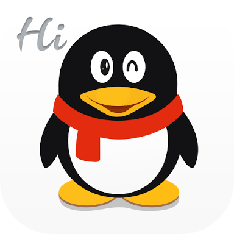

- Inicio
- Seccion 2:
- Seccion 3:
- Seccion 4:
- Seccion 5:
¿Que son las Redes Sociales?
Redes sociales es un término originado en la comunicación. Estas se refieren al conjunto de grupos, comunidades y organizaciones vinculados unos a otros a través de relaciones sociales. Esto fue el resultado de la convergencia de los medios, la economía política de los mismos y el desarrollo de tecnologías, teniendo como objetivo la interacción de dos o más canales.
En la primera parte de la década del año 2000 empezaron a aparecer muchos sitios web dedicados a brindar la posibilidad de comunicación dentro de lo que se llamó las redes sociales, que en aquella época eran conocidas como Círculos de Amigos. Fue con el auge de las redes sociales cuando Internet empezó a ser una herramienta masificada que realmente es útil pero también peligrosa.
"Descripcion de las plataformas"
Google Plus:
Es una red social operada por google Inc, se lanzo en junio de 2011. Los usuarios tienen que ser mayores de 13 años de edad, para poder tener la facilidad ed poder crear sus propias cuentas, sin ninguna complicacion debido a terminos y cuestiones legales y de alto cuidado.

<---Pincha Aqui Para Ir Al Sitio
QQ: Tencent qq, es una aplicacion de mensajeria para la computadora desarrollada por la compañia china Tencent Holdings que tambien ofrece una variedad de servicios como juegos en linea, musica, compras, peliculas y chat propio de voz.
<---Pincha Aqui Para Ir Al Sitio
Reddit: IReddit es un sitio web de marcadores sociales y agregador de noticias donde los usuarios pueden añadir texto, imagenes, videos o enlaces. Otros usuarios pueden votar a favor o en contra del contenido, haciendo que aparezca mas o menos destacados. Se trata de un mapa de discusion mundial basado en algun tema en especifico a tratar, donde se puede abarcar cualquier caso.
<---Pincha Aqui Para Ir Al Sitio
Wechat: Es un servicio de mensajeria movil chino y servicios de comunicacion de mensajes de voz creado por Tencent, fabrica de origen chino, se lanzo en 2011. La aplicacion es multiplataforma puesto que esta tanto como para pc, ios, y android. Entre los idiomas soportados contamos con chino, español, indonesio, japones, coreano, etc.
<---Pincha Aqui Para Ir Al Sitio